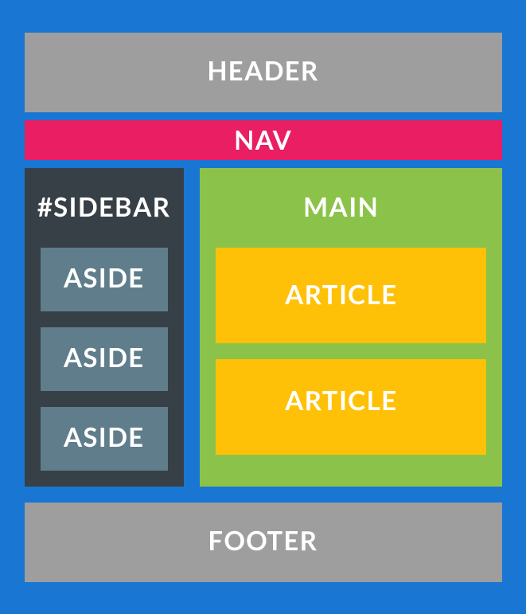

План занятия:
- HTML5 и cемантика
- HTML5-элементы
- Тег <header>
- Тег <nav>
- Тег <section>
- Тег <article>
- Тег <footer>
- Тег <main>
- Тег <aside>
- Пример семантического кода
- Практическое задание
HTML5 и cемантика
Семантическая верстка или семантический HTML-код - это подход к созданию веб-страниц на языке HTML, основанный на использовании HTML-тегов в соответствии с их семантикой (предназначением), а также предполагающий логичную и последовательную иерархию страницы.

Таким образом, когда мы создаем веб-страницу, с помощью языка HTML, мы объясняем компьютеру, какой
элемент, какую роль должен играть на странице.
Мы должны понимать, что содержание каждого элемента веб-страницы должно быть заключено в теги,
которые бы соответствовали их логическому и смысловому назначению.
Т.е. заголовки в тексте заключались бы в теги <h1>-<h6>, абзацы в теги <p>, списки в теги
<ul>/<ol> и так далее.
Код, который соответствует этим условиям, называют семантическим т.е. каждому элементу на
веб-странице, соответствует правильное смысловое значение.
Какие преимущества дает семантическая разметка?
- Информацию о том, как браузеру по умолчанию отображать тот или иной элемент на странице.
- Семантический код лучше читается и воспринимается поисковыми системами.
- Код более понятный для человека.
- Проще получить доступ к элементу и как следствие большая гибкость.
HTML5-элементы
Тег <header>
Группирует вводные и навигационные элементы, не является обязательным. Может содержать заголовки, оборачивать содержание раздела страницы, форму поиска или логотип. В HTML-документе может содержаться одновременно несколько элементов <header> и они могут располагаться в любой части страницы. Элемент <header> нельзя помещать внутрь элементов <footer> или другого элемента <header>.
Тег <nav>
Предназначен для создания блока навигации веб-страницы или всего веб-сайта, при этом не обязательно должен находиться внутри <header>. На странице может быть несколько элементов <nav>. Не заменяет теги <ul> или <оl>, он просто их обрамляет.
Тег <section>
Элемент представляет собой универсальный раздел документа. Группирует тематическое содержимое и
обычно содержит заголовок.
Не является блоком-оберткой, для этих целей уместнее использовать элемент <div>.
В качестве
содержимого может выступать оглавление,
разделы научных публикаций, программа мероприятия. Домашняя страница сайта также может быть поделена
на секции - блок вводной информации,
новости и контакты.
Элемент рекомендуется использовать только в том случае, если содержимое
элемента будет явно указано в схеме документа.
Тег <article>
Используется для группировки записей - публикаций, статей, записей блога, комментариев. Представляет собой независимый обособленный блок, предназначенный для многократного использования, как правило, начинается с заголовка. Может дублироваться на других страницах сайта и содержать внутри другие элементы <article>...</article>
Тег <footer>
Представляет собой нижний колонтитул содержащей его секции или корневого элемента. Обычно содержит
информацию об авторе статьи,
данные о копирайте и т.д. Если используется как колонтитул всей страницы, содержимое дополняется
сведениями об авторских правах,
ссылками на условия использования, контактную информацию, ссылками на связанное содержимое и
т.п.
В одном веб-документе может быть несколько элементов <footer>. Как каждая страница, так и каждая
статья может иметь свой элемент <footer>
Тег <main>
Элемент <main> представляет основное содержимое документа (содержимое элемента <body>).
Контент, находящийся внутри элемента, должен быть уникальным и не повторяться во всех документах
сайта,
таких как навигационные ссылки, информация о копирайте, логотипы, формы поиска (в случае, если форма
поиска является основной функцией документа).
Элемент <main> не может быть потомком таких элементов как <article>, <aside>, <footer>,
<header> или <nav>.
Тег <aside>
Группирует содержимое, связанное с окружающим его контентом напрямую, но которое можно счесть отдельным (т.е., удаление этого блока не повлияет на понимание основного содержимого). Чаще всего элемент позиционируется как боковая колонка (как в книгах) и включает в себя группу элементов: <nav>, цифровые данные, цитаты, рекламные блоки, архивные записи. Не подходит для блоков, просто позиционированных в стороне.
Пример семантического кода
<body>
<header>
<h1>Пудель</h1>
<nav>
<ul>
<li><a href="index.html">Главная</a></li>
<li><a href="about.html">О породе</a></li>
<li><a href="health.html">Здоровье</a></li>
</ul>
</nav>
</header>
<main>
<section>
<header>
<h2>О породе</h2>
<nav>
<ul>
<li><a href="#basic">Разновидности</a></li>
<li><a href="#app">Внешний вид</a></li>
<li><a href="#temp">Характер</a></li>
</ul>
</nav>
</header>
<section id="basic">
<h3>Разновидности</h3>
<p>...</p>
</section>
<section id="app">
<h3>Внешний вид</h3>
<p>...</p>
</section>
<section id="temp">
<h3>Характер</h3>
<p>...</p>
</section>
<footer>
<a href="#basic">Разновидности</a>
<a href="#app">Внешний вид</a>
<a href="#temp">Характер</a>
</footer>
</section>
<aside>
<h2>...</h2>
<p>...</p>
</aside>
</main>
<footer>
<small>Copyright© Моя собака.ру</small>
</footer>
</body>
Практическое задание
Сверстать страничку произвольной тематики, используя семантическую верстку.
Обязательно использование тегов <main>, <footer>, <nav>, <section>, <aside>.